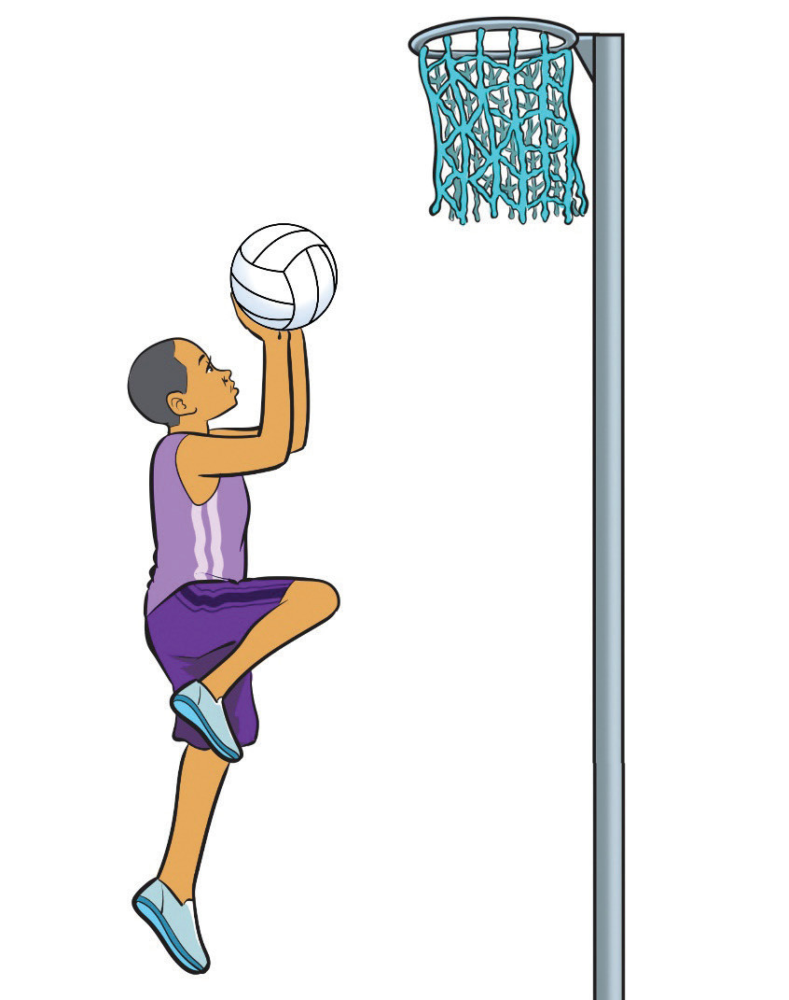

(ii)
Take a step with your dominant foot and jump off your non-dominant foot, bringing the ball towards the goalpost, as shown in Figure 1.18;
(iii)
Use your shooting hand to gently push the ball directly into the hoop, aiming for a soft and accurate shot;
(iv)
Keep your body aligned while using your non-shooting hand for balance; and
(v)
Follow through the arms and fingers towards the direction of the ball.

Defending
Defending means preventing the opposing team from scoring and forcing turnovers. Defenders must use strategic positioning, quick reflexes, and strong anticipation skills to challenge opponents and disrupt their attacking plays. Good defensive play requires focus, discipline, and teamwork to regain possession and create counterattacking opportunities. The key techniques of defense include marking, intercepting and blocking.